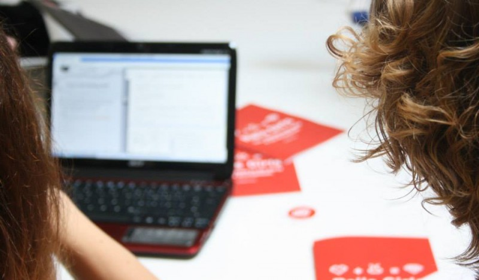

Code Girls
Werde ein Code Grrrl!
Schon mal versucht eine Fremdsprache zu lernen? Und von der Fülle an Vokabeln, Grammatik und Regeln total erschlagen gewesen? Genau so geht es euch vielleicht, wenn ihr euch das erste Mal mit einer Programmiersprache beschäftigt. Genau wie eine Fremdsprache lernt man HTML, Ruby on Rails oder Javascript deswegen am besten in der Gruppe. Und am allerliebsten mit uns!
Erst mal gilt es, die Basics zu lernen - damit lassen sich dann schon die ersten Sätze bilden. Und keine Angst, hier geht es nicht darum, so schnell wie möglich fehlerfreien Code zu schreiben. Wir möchten, dass ihr Spass an der Sache habt, dass ihr Fragen stellt, dass ihr neugierig seid und dass aktiv werdet.
Die Code Girls treffen sich alle 14 Tage im sub:lab (Westwerk Plagwitz). Kommt vorbei, wenn ihr Hilfestellung beim Erstellen eurer Homepage oder Blog braucht, eine spezielle Fragen zum Theme Web-Programmierung habt, bei den Code Girls mitmischen wollte oder ganz einfach wissen wollt: Wie fange ich eigentlich an programmieren zu lernen?
- Aktuelle Infos findet ihr hier oder auf unserer Facebook Seite.
- Materialien zu unseren Projekten findet ihr hier, interessante Links und Diskussionen gibt es in unserem Forum.
- Bei Fragen habt oder wenn ihr mit uns zusammenarbeiten möchtet, schreibt uns gerne eine Email!! 
Termine
Neben den regulären Treffen alle zwei Wochen laden wir in unregelmäßigen Abständen EntwicklerInnen zu Workshops und Vorträgen ein.
- alle zwei Wochen: Eloquent JavaScript Buchklub (hier anmelden!)
- Office Hours: 17.03., 31.03., 14.04. jeweils 19 bis 20:30 Uhr
Wo?
Im sub:lab im Westwerk (Plagwitz), Karl-Heine-Straße 93. Erreichbar mit den Straßenbahnen 3 und 14.
Über uns
Die Geschichte der Code Girls beginnt mit der erfolgreichen Teilnahme an einem Gewinnspiel eines Telekommunikationsunternehmens: Begeistert von der Aussicht ein paar Tage im sommerlichen Berlin zu verbringen Goodies abzustauben, reisen Natalie und Julia 2012 zur Campus Party in Berlin.
Motiviert von den Erfolgsgeschichten junger Programmiererinnen und überzeugt, bald selbst auf Konferenzen vom eigenen Tech-Start-Up zu berichten, beschließen sie bei einem abendlichen Kaltgetränk die Gründung eines eigenen Codier- und Programmierstammtischs für Mädchen und Frauen in Leipzig.
Das Start-Up lässt zwar noch auf sich warten, aber die Motivation, funktionale und ästhetisch ansprechende Seiten und Apps zu entwickeln, ist weiterhin ungebrochen. Mittlerweile dazugekommen ist Lucas, unser Coach, der uns mit Geduld und Expertise bei unseren Unternehmungen unterstützt.Inzwischen konzentrieren wir uns hauptsächlich auf die Organisation von Workshops und Vorträgen, sind aber weiterhin alle zwei Wochen im sub:lab zu unseren "Office Hours" anzutreffen und begeistert über jede Frage und Projektidee, egal ob ihr euren Blog verschönern wollt, euer JavaScript Code spinnt oder ihr Tipps haben wollt, wie und wo man am besten mit dem Programmieren anfängt. Die Code Girl sind eine gemeinnütziges Projekt - wir haben Spass am Programmieren und wollen, dass ihr das auch habt.
Kontakt
Fragen, Tipps, Wünsche? Schreib uns an info@codegirls.de oder auf Facebook. Einfach mal hallo sagen ist auch ok. :)
Vorschläge für Workshops, Vorträge und andere Ideen sind immer willkommen!
Oder komm einfach zum nächsten Treffen!